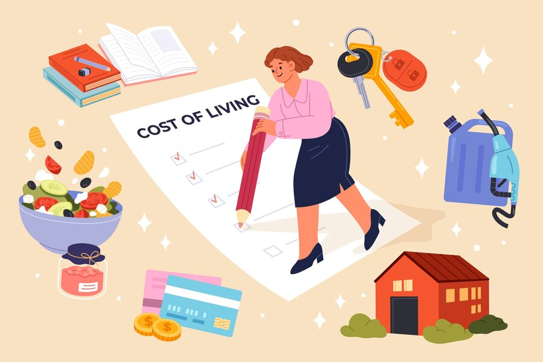
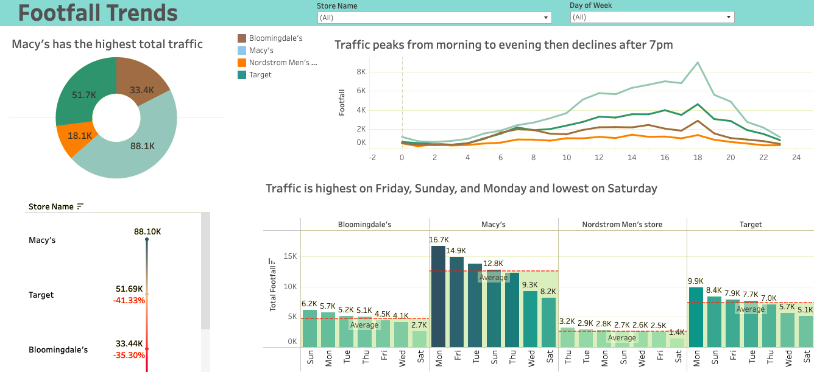

This project explores salary data using exploratory data analysis (EDA) to uncover insights and trends. The goal is to analyze the factors that influence salary and create a predictive model that can estimate salaries for new inputs. After understanding the data, a linear regression model is applied to predict salaries based on various features such as experience, education, and location.

In this project, I conduct an exploratory analysis on factors that influence living costs around the world. Using linear regression, I model relationships between key factors and use interactive geospatial maps to visualize regional trends.
This is a small project that focuses on data extraction using APIs. Using R, I accessed The Movie Database (TMDb) API to retrieve data on the most-watched TV shows globally, including attributes like ratings, popularity, and genre. The project involves API authentication, sending HTTP requests, and parsing JSON responses to create a structured dataset for further analysis.
I analyze factors influencing airline customer satisfaction. Using exploratory factor analysis (EFA) and a logistic regression model, I identify key drivers of satisfaction, such as ease of booking and flight timings. This is followed by visualizations to highlight the most significant factors.

This is all my Tableau dashboards and stories.